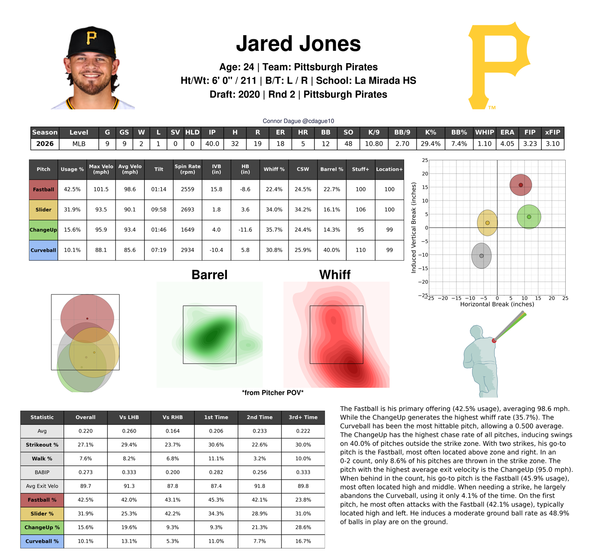
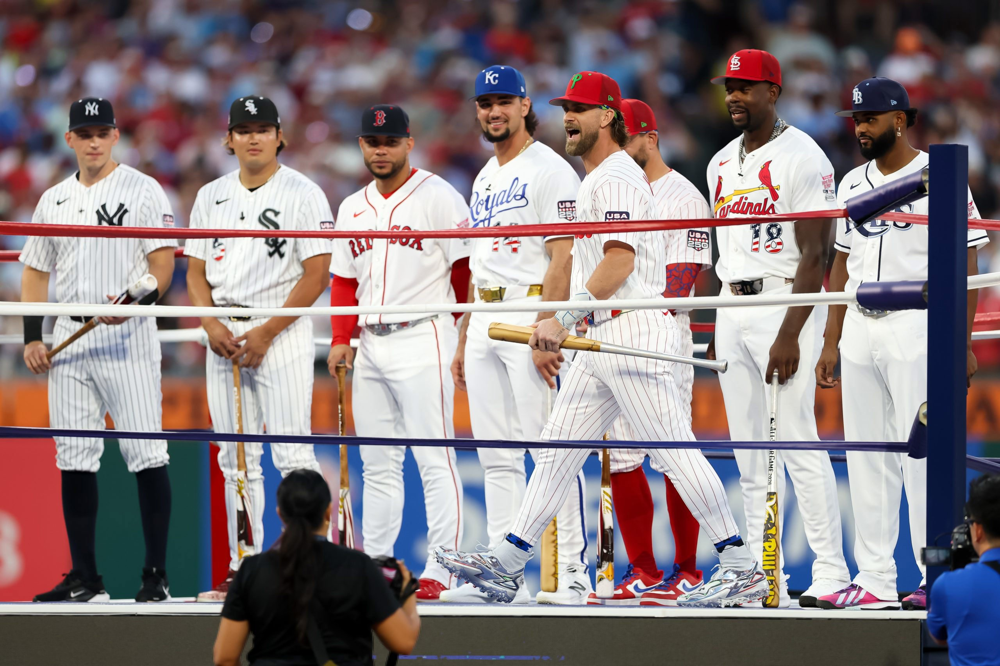
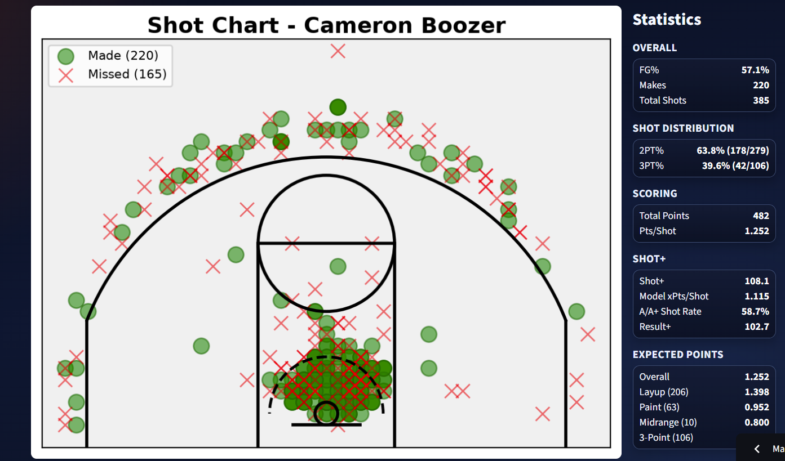

Aspiring data scientist turning everyday databases into insightful knowledge in all different types of fields. First-hand experience working with technology such as Trackman, KinaTrax, and NewtForce, to help coaches in-game decision making processes. Been a part of major P5 college programs for the last 4+ years.
I'm a recent industrial engineering graduate from West Virginia University. After working with the WVU Football program for 4+ years, I took up a role in the WVU Baseball Biomechanics & Performance Center as a Data Science Intern. In this role, I've helped clean, manage, and analyze player-tracking and motion-capture data, in addition to research projects and creating automated scouting reports.
During my time in the WVU Football Program, I was a student manager who worked with coaches and players to help with any needs on/off the field on a daily basis. Mainly working with the defense, I took pride in ensuring practices, walk-thru and any other operations ran smoothly for an optimal practice environment. In the off-season, I'd also help with prospective recruiting events and donor relations.
Collect and analyze Trackman, KinaTrax, and NewtForce data for player evaluation and coaching strategy. Built an automated Python scouting report that delivers streamlined visuals and insights for in-game decision-making, in addition to research projects for topics of interest.
Five seasons supporting coaches and players across practices, games, recruiting events, and team operations. Traveled to 16 different stadiums across the countries, plus I provided on-field support at the 2021 Guaranteed Rate Bowl, 2023 Duke's Mayo Bowl, and 2024 Scooter's Coffee Frisco Bowl.
Supported production operations for a major NCAA DI football project and, helped build the foundation for building 180 unique Mobile Cart systems for sideline technology integration at DI FBS programs.

After pulling pitch-level data from Statcast that MLB and various MiLB teams have available, I created a season-long report on any desired pitcher. This includes stats pulled from FanGraphs, in addition to a Stuff+ and Location+ model I created to measure each arm.

Does the Derby really ruin your swing? A deep dive into recent participants and whether their offensive production actually changes after the All-Star festivities.

After pulling every play from ESPN CBB API, I created a shot chart app that includes a Shot+ and Result+ rating to quantify the decision-making and quality of player.
Using available NFL tracking data, I created an animation of a single play, while predicting run or pass based on pre-play movement and formation.
A deep dive into recent Home Run Derby participants and whether their offensive game actually varies after participating in the All-Star festivities.
More short pieces on baseball, data, and process → medium.com/@connordague10
Although I have a variety of different experience in different roles, I'm looking for data scientist / analyst roles — ideally in sports, player development, performance science or operations. If you're looking for someone with 4+ years of experience working in successful P5 programs, I'd love to talk.